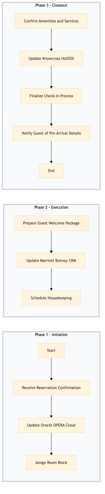

| Role | Steps |
|---|---|
| Revenue Manager | 1.1 1.3 2.2 |
| Front Desk Agent | 1.2 2.1 3.1 3.3 3.4 |
| Executive Housekeeper | 2.3 |
| Step | Name | Role | System | Input | Output | KPI | Dec? | Exc? | Pain Point / Risk |
|---|---|---|---|---|---|---|---|---|---|
| 1.1 | Receive Reservation Confirmation | Revenue Manager | SynXis CRS | Reservation details | Updated reservation record in SynXis CRS | < 3 min | N | Y | Delayed confirmation due to system connectivity issues. |
| 1.2 | Update Oracle OPERA Cloud | Front Desk Agent | Oracle OPERA Cloud | Reservation details from SynXis CRS | Updated reservation record in Oracle OPERA Cloud | < 5 min | N | Y | Data synchronization errors between systems. |
| 1.3 | Assign Room Block | Revenue Manager | Oracle OPERA Cloud | Reservation details and room availability | Room block assignment in Oracle OPERA Cloud | < 2 min | Y | N | Overbooking due to manual errors. |
| 2.1 | Prepare Guest Welcome Package | Front Desk Agent | Oracle OPERA Cloud | Guest preferences and hotel amenities | Customized welcome package | < 10 min | N | Y | Incorrect guest information leading to wrong packages. |
| 2.2 | Update Marriott Bonvoy CRM | Revenue Manager | Marriott Bonvoy CRM | Guest loyalty and reservation details | Updated guest profile in Marriott Bonvoy CRM | < 4 min | N | Y | Data privacy concerns during CRM updates. |
| 2.3 | Schedule Housekeeping | Executive Housekeeper | Oracle OPERA Cloud | Room block assignment and guest preferences | Scheduled housekeeping tasks in Oracle OPERA Cloud | < 5 min | Y | N | Overlooking special cleaning requests. |
| 3.1 | Confirm Amenities and Services | Front Desk Agent | Oracle OPERA Cloud | Guest preferences and available amenities | Confirmed amenities and services in Oracle OPERA Cloud | < 3 min | N | Y | Incorrect confirmation of guest requests. |
| 3.2 | Update Knowcross HotSOS | Front Desk Agent | Knowcross HotSOS | Reservation details and emergency contact information | Updated guest profile in Knowcross HotSOS | < 2 min | N | Y | Data integrity issues between systems. |
| 3.3 | Finalize Check-In Process | Front Desk Agent | Oracle OPERA Cloud | All pre-arrival processing data | Completed check-in process in Oracle OPERA Cloud | < 10 min | N | Y | System downtime affecting final checks. |
| 3.4 | Notify Guest of Pre-Arrival Details | Front Desk Agent | Book4Time | Pre-arrival details and guest contact information | Notification sent to guest via Book4Time | < 2 min | N | Y | Incorrect or delayed notifications. |
This process involves pre-arrival processing of reservations at a full-service Marriott hotel. It ensures that all necessary preparations are made to facilitate a smooth check-in experience for guests.